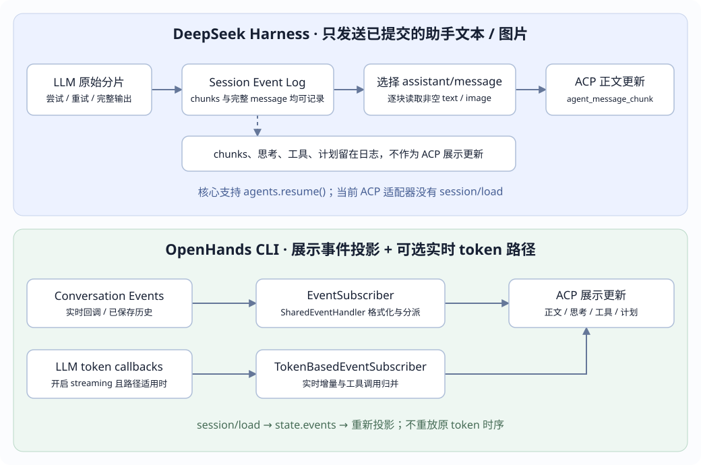
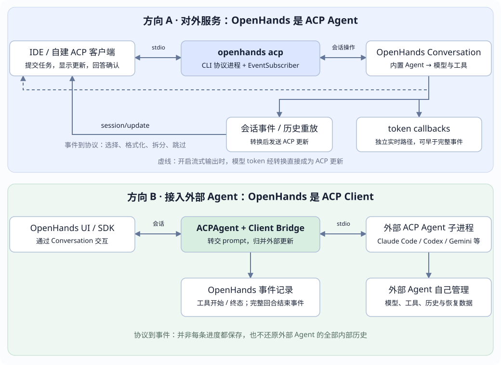

DeepSeek Harness
原始 assistant/chunk 可以入日志；ACP 尚未发送这段正文。等待完整 assistant/message 提交。
← 课程首页 · Event Log 与类型层次 · QA 专题
DEEPSEEK HARNESS × OPENHANDS · AGENT CLIENT PROTOCOL
比较 eventlog 怎样变成协议消息、什么时候发出正文，以及重连以后能恢复什么。先看两家的输出边界，再展开对外服务与接入外部 Agent 两个方向的源码链路。
session/load。核对日期：2026-10-16。DeepSeek Harness 固定到子模块提交 99f6f02fecdb7dff40c3fbc9470f5907c29f74ca；OpenHands CLI 固定到 0403f1a79a9fc62a6c7be21c17d7b51f64245ad2，SDK 固定到 12e967664c2353f4cb85dd27da04ade035ff078c。分别核对各实现，不表示已验证这些快照互连或混装。示例是简化教学数据，未调用真实模型或执行真实工具。原页面地址和 OpenHands 章节锚点保留。

| 比较项 | DeepSeek Harness：dsh-acp | OpenHands CLI：openhands acp |
|---|---|---|
| 主要用途 | 程序化自动化；向父 Agent 等客户端返回已提交的答案内容。 | IDE / 客户端集成；输出回答及工具、思考、计划等展示信息。 |
| 事件入口 | 订阅 session/event，只将 assistant/message 的指定内容块投影为输出。 | Conversation callbacks → EventSubscriber / SharedEventHandler；历史重放复用转换器。 |
| agent_message_chunk 的粒度 | 一个完整已提交助手消息中，每个非空 text / image 块对应一条更新。 | 可来自完整事件的展示文本；启用 streaming 时，也可来自实时 token delta。 |
| 工具 / reasoning / Plan | 保留在会话日志供其他界面消费，ACP 不发送这些展示更新。 | 按事件分支转换成 tool_call、tool_call_update、agent_thought_chunk、plan。 |
| 图片输出 | 从耐久附件引用重新读取并校验，转成 ACP 内联 base64；保持文本 / 图片块顺序。 | 本页核对的事件与 token 文字路径主要发展示文本；不能据此声称与 Harness 的图片输出路径对等。 |
| prompt 响应边界 | 等待准入、整个 Agent 空闲、输出交付队列停稳，再结算；不只等待一个 turn/end。 | 本次 Conversation runner 返回后生成 PromptResponse；正文与工具更新在此前独立发送。 |
| ACP 加载历史 | 未实现；只新建会话，不公布 loadSession。 | 实现 session/load：遍历 state.events 再投影；CLI --resume 也有历史重放路径。 |
| 核心持久化 | SessionPersistence 可保存事件并通过 agents.resume 恢复；不是 ACP load 的实现。 | Conversation 保存自己的事件与状态；ACP 历史显示依赖这份数据。 |
| 权限通道 | approval/request → request_permission；只提供一次允许 / 拒绝，按实际 callId 关联。 | WAITING_FOR_CONFIRMATION → request_permission；允许策略切换，确认卡片可表示一组动作。 |
session/prompt
→ admitAcpPrompt：校验文本 / 图片 / 资源引用
→ 图片先入附件存储，用户消息只保留引用
→ createUserMessage → agent.followup → Inbox / Agent Loop
session/event
├─ assistant/chunk：留在日志，不发 ACP 正文
├─ assistant/message：遍历已提交 message.content
│ ├─ 非空 text → agent_message_chunk { content: {type:"text", text} }
│ ├─ image → 读附件并校验 → agent_message_chunk {content:{type:"image", ...}}
│ └─ reasoning / tool-call 等 → 不导出
├─ tool/call、tool/result、todo/write 等：不转成 ACP 展示更新
└─ turn/end：记录关联结果，用于 prompt 结算，不生成回放帧转换点是 assistantBlockToAcp()，异步图片读取经过每个会话独立的 outputTail 串行交付。因此已提交的 text → image → text 不会因读取耗时而乱序；缺失 / 损坏图片会导致转换失败，不使用占位符。
“已提交”指进入 Session 的逻辑事件，不等于已经 fsync 落盘。ACP 监听器没有在每条通知前等待 SessionPersistence flush。模型输出完整成形、事件追加、磁盘耐久和客户端收到通知，是不同的时点。
也不能把“只发已提交答案”理解成“整项任务成功后只发最后一句”。每个 assistant/message 中的正文都可能发出；先前步骤已提交的文字不会因后续步骤失败而自动撤回。桥接拥有的 Agent 被同进程其他生产者驱动时，也可以产生输出。
输入侧保留文本与受支持图片的顺序，resource_link 展平为引用文本。图片能力取决于附件存储与确切模型路由；音频、嵌入资源、非空 additionalDirectories 和非空 mcpServers 不在当前适配范围。
属于桥接拥有的同一 Agent、且携带 callId 的 approval/request 进入 ACP session/request_permission。选项仅为 allow-once / reject-once；取消返回 cancelled，非允许选项按拒绝处理。模型不会直接读到协议选项，工具结果通过常规日志路径记录后续结果。
session/event、outputTail 与 approval/request · admitAcpPrompt / assistantBlockToAcp · 已有测试：省略展示事件 · 已有测试：顺序交付、部分失败与结束边界
同一段模型输出：“配置中的端口是 8080。”
时点 Harness ACP OpenHands CLI（开启适用的 streaming）
模型刚输出“配置中的” 日志可记 assistant/chunk 可立即发 agent_message_chunk
继续输出“端口是 8080。” 继续记 chunks，不发原始 delta 继续发正文增量
完整消息形成 assistant/message 提交 完整事件到来，避免重复输出流式正文
→ 按 text / image 块发 ACP
工具开始 / 结束 日志记录，不发工具展示帧 工具起始 / 更新；分片阶段可能已建卡片
回合结束 等准入、Agent idle、输出排空 runner 返回 → prompt result
历史加载 ACP 没有加载入口 从完整事件重投影，不重放 token 节奏失败场景尤其能区分两者：模型只输出“配置中的”就失败，且没有形成该次完整助手消息时，Harness 会保留原始 chunks，但不会把这些部分正文发到 ACP。OpenHands 的流式路径可能已把这段文字显示给客户端，后续错误处理不等于自动撤回已发通知。
OpenHands 非流式路径与开启 token 回调的路径要分开比较；其本地 CLI 开关还有 Responses API 路径限制。反过来，Harness 本身在日志 / Web 界面具备流式观测材料，也不代表 dsh-acp 会导出逐 token 更新。
Harness 的输出转换和 prompt 结算是异步的。正常停止、达到 token 上限、取消与错误的处理也不同：当前 prompt 处理器将关联 max-tokens 结算为 end_turn，显式 ACP 取消结算为 cancelled；关联错误在停稳后拒绝请求。不能只读 codec.ts 的枚举转换就推断最终 wire 结果。
settleAfterQuiescence 的最终优先级 · 底层结束原因转换 · OpenHands 流式回调与去重细节
选择场景，对照当前实现的输出和恢复边界。说明器是静态教学数据，不连接任何 Agent。
原始 assistant/chunk 可以入日志；ACP 尚未发送这段正文。等待完整 assistant/message 提交。
启用适用的 streaming 时，token callback 可以立即发送 agent_message_chunk；这不是已落盘事件的逐条回放。
| 恢复对象 | DeepSeek Harness | OpenHands |
|---|---|---|
| 框架自身的持久会话 | 配置 SessionPersistence 后，Header + Event Log 可重建 Session，agents.resume 重新组装 Agent；中断生命周期补齐，再接受新 Turn。 | Conversation 的持久事件和状态用于重新建立会话；不能据此恢复旧执行栈或工具进程。 |
| ACP 连接加载旧 Session | dsh-acp 只调用 agents.create；没有 loadSession handler，没有读取旧日志并回放 ACP 的路径。 | CLI 有 session/load / --resume 路径，加载 state.events 后调用 EventSubscriber。 |
| 客户端历史展示 | 通过当前 ACP 不能请求旧 transcript；需要其他已有宿主入口或额外适配，不应假装已有 ACP replay。 | 历史被重新投影成 ACP 展示更新。用户消息在该 subscriber 中跳过，完整 UI 仍需核对客户端整合。 |
| 原始 token 序列 | 持久日志可保留 assistant/chunk；当前 ACP 不提供它们的实时或历史导出。 | token 回调不是历史重放来源；session/load 不保证原 token 粒度、时间和中间画面重现。 |
| 断开连接 | 桥接停止准入，取消并等待活动和输出交付，释放该连接拥有的 Agent 与相应可继续后代。 | 本页已核对 load 与 CLI 本地会话路径；不把不同客户端、remote 实现或断线场景推定为统一自动续传。 |
| 接入外部 ACP Agent 后继续 | subagent-acp 每次新进程 + newSession，没有原生 session/load 重连流程。 | SDK ACPAgent 可按持有的原生 session ID 尝试 load_session；仍需要外部 Agent 自身的历史数据。 |
AgentStore.resume · 持久会话读取与修复 · ACP 仅新会话与连接生命周期 · OpenHands 恢复源码展开
Harness：父 Agent → subagent-acp → 外部 ACP 子进程
← agent_message_chunk 文本累积
→ SubagentResult.output → 父工具结果 / 父会话
OpenHands：Conversation → ACPAgent → 外部 ACP 子进程
← token / thought / 工具 / usage 等更新
→ ACPToolCallEvent、FinishAction / Observation 等 → 本地会话| 项目 | Harness subagent-acp | OpenHands SDK ACPAgent |
|---|---|---|
| 正文 | 按序累积收到的 agent_message_chunk 文本，作为 SubagentResult.output。不是自动为每条 ACP 通知创建父日志事件。 | 文字实时回调并累积；正常结束时生成 FinishAction / FinishObservation。 |
| 工具、思考、计划 | 消费但不向父级展示这些更新；父级工具结果不等于子 Agent 的完整事件流。 | 工具开始 / 首次终态写 ACPToolCallEvent，思考累积到结果事件；该 handler 对 plan 没有专门入库分支。 |
| 权限 | 配置 allow / reject；默认 reject，不向人展示。allow 会查找允许类型的选项。 | 当前 SDK bridge 自动选择第一个选项并返回 AllowedOutcome；不同于 CLI 对外请求人工确认。 |
| 上下文 / 恢复 | 新进程、全新远端会话；不继承父对话，不执行 session/load。 | 外部 Agent 自己拥有模型上下文；SDK 可尝试恢复其原生会话。 |
别把服务端和客户端的保证混在一起：dsh-acp 服务端只发已提交内容，但 subagent-acp 客户端只看通知类型，不验证远端“提交”时点。如果它连接启用实时输出的其他 ACP Server，已经收到的部分文本也会累积，取消 / 错误结果可保留这些文本。输入提示词转换当前也只转发文本块。
正文 fold、权限策略、newSession 与部分结果 · 提供方配置、默认 reject 与能力声明 · ACP 子进程提供方说明 · OpenHands 反向更新入库细节
以上是核验方案与已有源码测试的阅读依据；本次只修改文档页面，未运行两家 Agent 的真实模型会话或恢复集成测试。

| 问题 | 方向 A：OpenHands 对外服务 | 方向 B：OpenHands 接入外部 Agent |
|---|---|---|
| 谁是 ACP Client？ | IDE 或自己写的 ACP 客户端。 | OpenHands SDK 里的客户端桥接器。 |
| 谁是 ACP Agent / Server？ | openhands acp 启动的协议进程。 | Claude Code / Codex / Gemini 等对应的 ACP 子进程。 |
| 谁调用模型、执行工具？ | 本页主线为 CLI 的本地 OpenHands Agent 与工作区；CLI 也有 remote 实现。 | 外部 Agent 自己管理模型、工具和执行。 |
| 转换发生在哪？ | CLI 的 EventSubscriber / SharedEventHandler / TokenBasedEventSubscriber。 | SDK 的 ACPAgent 与 _OpenHandsACPBridge。 |
| 记录什么历史？ | OpenHands 的会话事件；投影后发送给 IDE。 | 外部更新的归并结果进入 OpenHands 事件；外部 Agent 另有自己的历史。 |
| 连接方式 | 客户端启动 CLI，以 JSON-RPC over stdio 通信。 | SDK 启动外部 Agent 子进程，同样以 stdio 通信。 |
这里的 Server 是协议服务进程。它提供会话、任务提交、输出与执行过程交互；应用的 Web API、模型 API、工具服务和 ACP 是不同接口。
例如在 IDE 中输入：“读取 config.json，解释配置”。IDE 发出 ACP 请求，CLI 把输入转换成 OpenHands 用户消息，驱动 Conversation；产生的事件再经订阅器变成 ACP 更新。
IDE → initialize → 能力协商
IDE → session/new → 创建 Conversation，返回 sessionId
IDE → session/prompt（文本 / 支持的内容块）
→ convert_acp_prompt_to_message_content
→ Message(role="user") → conversation.send_message
→ run_conversation_with_confirmation
Conversation 的事件回调 → EventSubscriber / SharedEventHandler
→ session/update → IDE 更新气泡、思考区、工具卡片、计划
Conversation 运行结束 → 原 session/prompt 请求的响应
→ result: { stopReason: "end_turn" }回复正文、工具进度与这一轮结束是三个不同信号。session/update 是通知；session/prompt 的 result 是原请求的响应；需要用户批准时还会发出独立的 session/request_permission 请求。
本地 Conversation 配置了 persistence_dir 和事件 callbacks；因此持久化与 ACP 展示消费的是会话事件链路。实时输出通过回调发送，历史恢复则遍历 conversation.state.events，调用转换器。CLI 不会为每条实时更新都先重新扫描磁盘日志。
能力要看实际方法实现：该 CLI 快照的 session/list 返回空列表，session/set_model 是 no-op，session/fork 与 session/resume 不支持；恢复历史使用 session/load 或 CLI 的 --resume 路径。协议中有某个方法名，不等于实现已具备该能力。
请求、响应、方法支持与 load_session · Conversation 与 callbacks / token_callbacks 装配
入口是 EventSubscriber.__call__(event)。它按照事件类分派，SharedEventHandler 再构造具体更新。多数文字来自 event.visualize.plain，工具的结构化输入、输出另放 rawInput / rawOutput。
| OpenHands 事件 / 子类型 | ACP 输出 | 映射细节 |
|---|---|---|
普通 ActionEvent | tool_call，status=in_progress | tool_call_id → toolCallId；计算 title、kind、locations；action.model_dump() → rawInput。reasoning 与 thought 非空时先分别发送 agent_thought_chunk。 |
ThinkAction | agent_thought_chunk | 动作的展示文本进入思考区，不按普通工具卡片起始更新处理。 |
FinishAction | agent_message_chunk | 将动作的展示文本作为助手输出；它与 prompt result 是不同消息。 |
普通 ObservationEvent | tool_call_update，status=completed | 沿用 toolCallId，展示文本进入 content，event.model_dump() 进入 rawOutput。 |
UserRejectObservation / AgentErrorEvent | tool_call_update，status=failed | 由独立分支识别，填入拒绝或错误展示及原始事件。 |
TaskTrackerObservation | plan | task.title → entry.content；todo → pending，in_progress → in_progress，done → completed；priority 固定为 medium。此分支发送计划后直接返回。 |
ThinkObservation / FinishObservation | 跳过 | 对应内容已由动作侧表达，结果侧不再生成普通工具完成更新。 |
MessageEvent：非 user role | agent_message_chunk | 先取非空的 visualize.plain，再发送助手展示文本。 |
MessageEvent：user role | 跳过 | 避免客户端已经显示的用户输入再次出现；该订阅器本身不补发 user_message_chunk。 |
SystemPromptEvent / PauseEvent / Condensation / CondensationRequest | agent_thought_chunk | 共享处理器把这些事件的展示文本发到思考通道；不能据此把 ACP thoughts 全部当成模型的原始思维内容。 |
ConversationStateUpdateEvent | 跳过 | 内部状态管理通知没有对应的 ACP 事件更新。 |
映射不是固定的一对一。一个 ActionEvent 可以产生 reasoning、thought、tool_call 三条更新；一张工具卡片又依赖动作与结果多条事件。TaskTrackerObservation 有专门的计划分支，不能把它描述成普通完成卡片再自动附加计划。
该快照的普通 Observation 分支直接设置 completed，失败分支显式识别 UserRejectObservation / AgentErrorEvent；不要自行补写“任何 observation.is_error 都自动转成 failed”的规则。方法注释和实现有出入时，本页按执行代码说明。
更新可以附带 _meta["openhands.dev/metrics"]，承载从 conversation stats 读取的 token、cost 和状态行；缺少统计时不附带。这是 OpenHands 扩展元数据，不是把整个事件日志塞进 ACP。
事件分派、用户消息跳过与 Action thought · 动作 / 结果 / Plan / 错误映射 · 工具标题、位置、内容块与 metrics
固定示例只说明字段与路径；无网络请求，也不会执行示例工具。协议使用 camelCase，Python 构造参数通常使用 snake_case。
普通 ActionEvent，经 SharedEventHandler.handle_action_event 转换；工具卡片开始更新保留调用 ID 与结构化参数。
IDE 显示执行中的卡片。tool_call 表示调用状态，不单独证明文件操作已经成功；历史可以重放这张卡片的开始与结束。
{
"jsonrpc": "2.0",
"method": "session/update",
"params": {
"sessionId": "session-demo",
"update": {
"sessionUpdate": "tool_call",
"toolCallId": "call-1",
"title": "读取 config.json",
"kind": "read",
"status": "in_progress",
"rawInput": { "command": "view", "path": "/project/config.json" }
}
}
}非流式：完整事件 → EventSubscriber → SharedEventHandler → session/update
开启 --streaming 且满足当前适配条件：
LLMStreamChunk.delta.content → agent_message_chunk
LLMStreamChunk.delta.reasoning_content → agent_thought_chunk
tool_calls 的名称、ID、参数分片 → tool_call / tool_call_update
完整 ActionEvent 到来 → 已开始的卡片只更新摘要与标题
ObservationEvent 到来 → 结束卡片并清理分片状态本地 CLI 使用 TokenBasedEventSubscriber.on_token。正文与 reasoning 只取 choice.index=0，工具调用按 tool_call.index 归并；调用 ID、名称及有效参数骨架齐备后才开始显示，think 工具内容走思考区。
完整 ActionEvent 若对应的卡片已在分片阶段开始，订阅器会更新已有卡片，避免再创建一次。流式路径的完整事件处理器不再按普通 MessageEvent 重发整段助手正文；历史重放则使用非流式 EventSubscriber。
当前 CLI 的开关还要求 not agent.llm.uses_responses_api()。因此传入 --streaming 不保证所有模型路径都启用相同 token 回调。
ActionEvent 已出现
→ Conversation 进入 WAITING_FOR_CONFIRMATION
→ runner 读取尚未匹配结果的 pending actions
→ ask_user_confirmation_acp
→ session/request_permission（有自己的 JSON-RPC 请求 id）
→ IDE 返回选项
├─ 允许：继续；必要时更新确认策略
├─ 拒绝：conversation.reject_pending_actions
└─ 暂缓 / 请求失败：pause，不自动执行
最终 session/prompt 的响应有自己的 id；不会拿权限请求的 id 替代。CLI 的选项包括一次允许、一次拒绝、持续允许和按风险确认。确认请求使用 confirmation-{sessionId} 作为确认卡片 toolCallId，可以代表一组待执行动作；不要强行把它当成某个原始工具调用的 ID。
取消也走控制面：CLI 的 session/cancel 通知会 pause 会话并等待运行任务停止。历史里出现某个工具卡片或暂停说明，不代表旧进程中的等待对象可在重启后原样复活。
这个方向使用 SDK 的 ACPAgent。OpenHands 把一个用户回合交给外部 Agent，外部 Agent 决定怎样调用自己的模型与工具；OpenHands 接收协议更新，并转换成自己的展示事件和回合结果。
OpenHands 的用户 MessageEvent
→ _build_acp_prompt：文本 / 支持的图片 + 可选上下文后缀
→ 外部 session/prompt
→ _OpenHandsACPBridge.session_update
├─ 文字：累积 + 实时回调
├─ 工具：归并 + ACPToolCallEvent
└─ usage：归集，完成时记录
→ prompt 完成
→ FinishAction + FinishObservation
→ Conversation 回调 → state.append_event → 配置的事件持久化| 收到的 ACP 更新 | 当前 SDK 处理 | OpenHands 事件结果 |
|---|---|---|
agent_message_chunk | 接收文本块，脱敏后累积，向 on_token 发送实时文本。 | 正常完成后合并到 FinishAction.message；不会逐片保存为 MessageEvent。 |
agent_thought_chunk | 接收文本块并累积。 | 正常完成后进入最终 ActionEvent 的 reasoning_content。 |
tool_call | 缓存 title、kind、status、input、output、content，发出开始记录。 | ACPToolCallEvent；若首次即终态，则该条也表达终态。 |
tool_call_update | 按 toolCallId 归并；中间进度只累计，首次进入终态才发出结果记录。 | 通常每个调用是一条开始 + 一条终态事件，不是每帧一条日志。 |
usage_update | 保存 token、上下文窗口等输入；完成时统一记录 usage / cost。 | 走统计处理，不把每条更新复制为普通聊天消息。 |
plan 等其他更新 | 本快照的该 handler 没有专门转换分支，走调试日志路径。 | 不能认为每一种 ACP SessionUpdate 都有对应的耐久领域事件。 |
ACPToolCallEvent 是展示事件。它不是 LLMConvertibleEvent，不参与 OpenHands 自己的 LLM messages 转换，也不会让 OpenHands 再执行外部 Agent 已执行过的工具。图上的工具卡片是对外部工作的记录。
正常 prompt 返回时，SDK 会关闭仍未结束的卡片，再生成一对 ActionEvent(FinishAction) / ObservationEvent(FinishObservation)，标记一个完整外部助手回合结束。取消路径会为在途工具发 failed 收尾；这属于桥接层的收尾策略，不能把合成终态理解成额外的远端成功凭据。
OpenHands 这份日志只拥有接收和转换后的事实。外部 Agent 的全部 system prompt、原始模型请求、内部尝试和原生存储，并不会自动完整复制进来。
固定 SDK 快照的 _OpenHandsACPBridge.request_permission 自动选第一个选项，并返回 AllowedOutcome；不会像方向 A 的 CLI runner 那样向 IDE 发起人工确认。该桥接器还拒绝 elicitation，客户端 fs / terminal 方法不提供实现，外部 Agent 自己执行文件和终端操作。需要人工审批的产品，必须核对或实现自己的交互策略，不能仅凭“支持 ACP”推断已有审批 UI。
反向更新接收与归并 · 正常回合的 Finish 事件 · ACPToolCallEvent 的用途 · 默认事件回调入库
{
"jsonrpc": "2.0",
"method": "session/update", // JSON-RPC：这是会话更新通知
"params": {
"sessionId": "session-demo", // 更新属于哪个会话
"update": {
"sessionUpdate": "agent_message_chunk", // ACP：这是助手正文分片
"content": {
"type": "text", // 内容块：文本
"text": "配置文件包含端口与数据库地址。"
}
}
}
}
// JSONC 示意；真实 JSON 不含中文注释。通知没有 JSON-RPC 请求 id。| 标识 / 类型 | 负责什么 | 例子 |
|---|---|---|
| OpenHands 事件类 | 会话内部发生了什么。 | ActionEvent、ObservationEvent、ACPToolCallEvent。 |
| ACP Python 模型类 | 构造经过协议模型约束的数据。 | ToolCallStart、ToolCallProgress、AgentMessageChunk。 |
| JSON-RPC method / id | 定位方法，匹配请求和响应。 | session/prompt、session/request_permission；各请求使用自己的 id。 |
| update.sessionUpdate | 表示本次会话更新种类。 | tool_call、tool_call_update、plan、agent_message_chunk。 |
| content.type | 表示协议内容块的格式。 | text 等；与事件类、方法名不是同一份枚举。 |
| sessionId / toolCallId / event.id | 分别关联会话、工具生命周期和具体事件。 | 同一个 toolCallId 可出现在多条事件和多次更新里；不能拿它当所有消息的唯一 ID。 |
Python 里的 tool_call_id、raw_input 等字段序列化到 ACP wire 时对应 toolCallId、rawInput。UI 端拿到的是协议读模型，不能直接按 OpenHands 原始事件类去解释每条通知。
| 场景 | 现有路径 | 不能推导出的保证 |
|---|---|---|
| 方向 A：重新显示 OpenHands 历史 | session/load 读取 Conversation；遍历 state.events，用新的 EventSubscriber 逐条投影。--resume 的相应路径也重放历史。 | 不是原始 token 时序的无损回放；该 subscriber 跳过 user role 消息，完整用户历史展示还需核对客户端整合。 |
| 方向 A：等待确认时中断 | 恢复持久会话状态后，runner 可处理 WAITING_FOR_CONFIRMATION 并重新发起确认。 | 原 JSON-RPC 请求、旧连接和 Promise 不会原地复活；具体恢复条件依赖实际保存的状态。 |
| 方向 B：显示已有外部工具轨迹 | 读取 OpenHands 保存的 ACPToolCallEvent 与最终 Finish 事件。 | 展示恢复不代表外部 Agent 的原生模型上下文已恢复。 |
| 方向 B：让外部 Agent 继续记得前文 | SDK 持有 / 读取原生 ACP session ID，并在对方支持时调用 load_session；还需要对方自己的历史数据仍存在。 | 只有 OpenHands Event Log 不足以恢复外部 Agent 全部内部状态；load 失败可退回新会话。 |
ACP 消息投影、模型上下文、持久化、观测是不同消费者。对比前一篇：可以在同一条事件链上派生多个结果，但每条协议消息是否进入耐久日志，必须查实际生产和保存路径。
下面是建议的可控核验步骤。本次页面制作核对了固定源码，并检查静态页面与说明器；未运行 OpenHands 真实模型、外部 Agent 或恢复集成测试。